notes
observedCaptured control: Notes (SVG fragment)
action-or-status-icon → action-or-status-icon
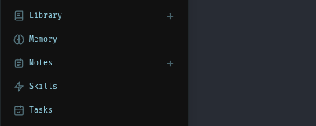
Visible, unobscured in 01-shell. SVG is 14 by 14 px; contained in its owner control.
Use the selected navigation mark in both the icon rail and the expanded sidebar.theme
observedCaptured control: Theme (SVG fragment)
action-or-status-icon → action-or-status-icon
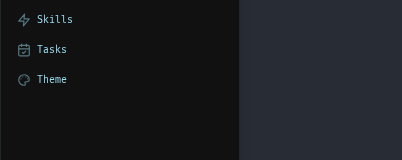
Visible, unobscured in 01-shell. SVG is 14 by 14 px; contained in its owner control.
Use the selected navigation mark in both the icon rail and the expanded sidebar.add
observedCaptured control: Add signature (then click on PDF) (SVG fragment)
action-or-status-icon → labeled-command
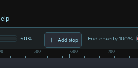
Visible, unobscured in editor-tool-gradient. SVG is 14 by 14 px; contained in its owner control.
Add a gradient stop; keep the signature nib on Add signature.rename
observedCaptured control: Rename endpoint (SVG fragment)
action-or-status-icon → labeled-command
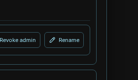
Visible, unobscured in settings-users. SVG is 14 by 14 px; contained in its owner control.
Current user Rename action; the endpoint Rename control no longer exists at this PR head.delete
observedCaptured control: Delete item (SVG fragment)
action-or-status-icon → action-or-status-icon
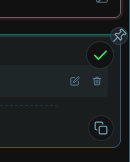
Visible, unobscured in notes-saved-checklist. SVG is 10 by 10 px; contained in its owner control.
Scoped to the selected source control; existing labels, state hooks and unrelated glyphs remain.download
observedCaptured control: Start this queued download now (SVG fragment)
action-or-status-icon → labeled-command
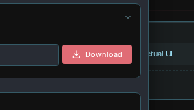
Visible, unobscured in feature-cookbook. SVG is 14 by 14 px; contained in its owner control.
Actual Download action; the captured triangle starts a queued task.save
not-observedCaptured control: Save (archive) (SVG fragment)
action-or-status-icon → action-or-status-icon
Context onlyThe selected Save (archive) SVG is in a legacy Notes action footer hidden by the current card layout. The visible card uses Mark done. Keep archiving terminology; rename this catalog concept archive before wider reuse.
Scoped to the selected source control; existing labels, state hooks and unrelated glyphs remain.deselect
observedCaptured control: Cancel selection (SVG fragment)
action-or-status-icon → action-or-status-icon
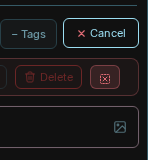
Visible, unobscured in notes-bulk-selection. SVG is 12 by 12 px; contained in its owner control.
Scoped to the selected source control; existing labels, state hooks and unrelated glyphs remain.filter
not-observedCaptured control: Filter by serving engine (SVG fragment)
disclosure-arrow → semantic-icon-plus-disclosure
Context onlyServing-engine filter is conditional on the hardware-fit results view. Its separate disclosure caret is preserved. No hardware scan or provider download was invoked. Screenshot shows the fixture model-picker context, not this unobserved glyph.
Scoped to the selected source control; existing labels, state hooks and unrelated glyphs remain.filter-clear
not-observedCaptured control: Clear every gallery filter (literal text)
text-command → labeled-command
Context onlyThe Clear all filter action was not observed in the fixture. It retains its text label; no blanket replacement of gallery clear buttons was made. Screenshot shows the fixture model-picker context, not this unobserved glyph.
Scoped to the selected source control; existing labels, state hooks and unrelated glyphs remain.sort
not-observedCaptured control: Sort sessions (SVG fragment)
action-or-status-icon → action-or-status-icon
Context onlySession Sort needs a populated session list. The empty disposable account did not expose this control.
Scoped to the selected source control; existing labels, state hooks and unrelated glyphs remain.favorite
not-observedCaptured control: Favorite (SVG fragment)
action-or-status-icon → action-or-status-icon
Context onlyThe real photo detail header was not exposed by the fixture. Dynamic favorite paint is retained in source, but this control remains unverified. Screenshot shows the fixture model-picker context, not this unobserved glyph.
Scoped to the selected source control; existing labels, state hooks and unrelated glyphs remain.unlink
kept-oldCaptured control: Unlink (literal text)
text-command → kept old
Context onlyCaptured mobile Unlink button closes the document tab. Keep it for now; fix the misleading label separately instead of adding a broken-link symbol.
Captured mobile Unlink button closes the document tab. Keep it for now; fix the misleading label separately instead of adding a broken-link symbol.open
not-observedCaptured control: Open in Launch (SVG fragment)
action-or-status-icon → action-or-status-icon
Context onlyOpen in Launch requires a downloaded, launchable model task. No model download or launch was performed. Screenshot shows the fixture model-picker context, not this unobserved glyph.
Scoped to the selected source control; existing labels, state hooks and unrelated glyphs remain.move
observedCaptured control: Move selected duplicates, failed audits, and low-confidence skills to the bin (SVG fragment)
action-or-status-icon → tool-icon
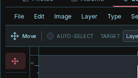
Visible, unobscured in 06-editor. SVG is 18 by 18 px; contained in its owner control.
Move tool; the captured Bin button deletes skills.clear
not-observedCaptured control: Clear selected Notes/Todos context (SVG fragment)
action-or-status-icon → action-or-status-icon
Context onlyClear selected Notes/Todos context appears only after attaching context to chat. This state was not exercised.
Scoped to the selected source control; existing labels, state hooks and unrelated glyphs remain.expand
not-observedCaptured control: ICON_EXPAND (SVG fragment)
action-or-status-icon → action-or-status-icon
Context onlyComparison pane expand is conditional on an active comparison. No provider-backed comparison was run.
Scoped to the selected source control; existing labels, state hooks and unrelated glyphs remain.collapse
not-observedCaptured control: Collapse settings navigation (SVG fragment)
disclosure-arrow → action-icon
Context onlyComparison pane collapse is conditional on an expanded comparison pane. The Settings navigation chevron was retained.
Collapse a comparison pane; keep the Settings navigation chevron.maximize
observedCaptured control: Maximize editor (SVG fragment)
action-or-status-icon → action-or-status-icon
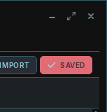
Visible, unobscured in 06-editor. SVG is 14 by 14 px; contained in its owner control.
Scoped to the selected source control; existing labels, state hooks and unrelated glyphs remain.panel-right
not-observedCaptured control: Window panels (SVG fragment)
action-or-status-icon → action-or-status-icon
Context onlyWindow panels has a semantic glyph and separate caret inside ge-stacked-glyph, hidden by the current text-menubar CSS. Keep the text label and caret; do not force this dormant glyph into the menubar.
Scoped to the selected source control; existing labels, state hooks and unrelated glyphs remain.dock
not-observedCaptured control: Dock panel (SVG fragment)
action-or-status-icon → action-or-status-icon
Context onlyDock panel belongs to the editor floating-panel UI. No floating dock panel was created; the History popup is a different component.
Scoped to the selected source control; existing labels, state hooks and unrelated glyphs remain.quote
not-observedCaptured control: _QUOTE_ICON (SVG fragment)
action-or-status-icon → action-or-status-icon
Context onlyQuoted email-thread fold needs a loaded email thread. No mailbox was configured or contacted. Screenshot shows the fixture model-picker context, not this unobserved glyph.
Scoped to the selected source control; existing labels, state hooks and unrelated glyphs remain.reasoning
not-observedCaptured control: Reasoning effort (SVG fragment)
disclosure-arrow → semantic-icon-plus-disclosure
Context onlyReasoning controls depend on model capabilities. No reasoning-capable provider was configured. Source check confirms the new semantic mark is alongside the retained dropdown caret.
Scoped to the selected source control; existing labels, state hooks and unrelated glyphs remain.context
not-observedCaptured control: Draft a reply with AI (fast + optional context) (SVG fragment)
action-or-status-icon → labeled-command
Context onlyChat context meter depends on an active session/model context. The disposable account did not expose it. The AI Draft reply button was retained.
Chat context meter; the captured button drafts an AI reply.model-add
observedCaptured control: Add model endpoints (SVG fragment)
action-or-status-icon → action-or-status-icon
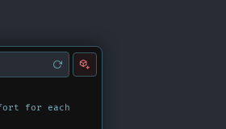
Visible, unobscured in 02-model-picker. SVG is 14 by 14 px; contained in its owner control.
Scoped to the selected source control; existing labels, state hooks and unrelated glyphs remain.database
kept-oldCaptured control: Refresh from database (SVG fragment)
action-or-status-icon → kept old
Context onlyCaptured source refreshes calendar data. Keep the refresh arrow; a database cylinder does not convey refresh. Screenshot shows the fixture model-picker context, not this unobserved glyph.
Captured source refreshes calendar data. Keep the refresh arrow; a database cylinder does not convey refresh.file
not-observedCaptured control: File actions (SVG fragment)
action-or-status-icon → action-or-status-icon
Context onlyThe File semantic glyph is inside ge-stacked-glyph, which the current text-menubar CSS hides. The visible File label remains correct. Avoid duplicating a file icon just to replace a hidden fragment.
Scoped to the selected source control; existing labels, state hooks and unrelated glyphs remain.bold
observedCaptured control: Bold (Ctrl+B) (literal text)
formatting-glyph → formatting-glyph
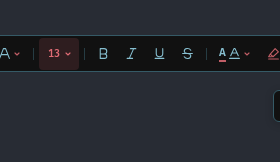
Visible, unobscured in 03-document. SVG is 13 by 13 px; contained in its owner control.
Scoped to the selected source control; existing labels, state hooks and unrelated glyphs remain.italic
observedCaptured control: Italic (Ctrl+I) (literal text)
formatting-glyph → formatting-glyph
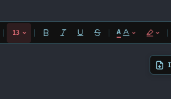
Visible, unobscured in 03-document. SVG is 13 by 13 px; contained in its owner control.
Scoped to the selected source control; existing labels, state hooks and unrelated glyphs remain.underline
observedCaptured control: Underline (Ctrl+U) (literal text)
formatting-glyph → formatting-glyph
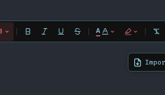
Visible, unobscured in 03-document. SVG is 13 by 13 px; contained in its owner control.
Scoped to the selected source control; existing labels, state hooks and unrelated glyphs remain.strikethrough
observedCaptured control: Strikethrough (Ctrl+Shift+X) (literal text)
formatting-glyph → formatting-glyph
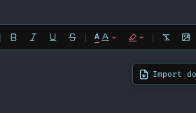
Visible, unobscured in 03-document. SVG is 13 by 13 px; contained in its owner control.
Scoped to the selected source control; existing labels, state hooks and unrelated glyphs remain.superscript
observedCaptured control: Superscript (literal text)
formatting-glyph → formatting-glyph
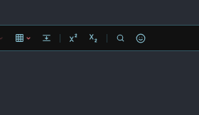
Visible, unobscured in 03-document-editing. SVG is 13 by 13 px; contained in its owner control.
Scoped to the selected source control; existing labels, state hooks and unrelated glyphs remain.subscript
observedCaptured control: Subscript (literal text)
formatting-glyph → formatting-glyph
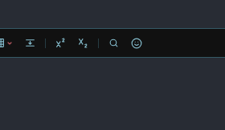
Visible, unobscured in 03-document-editing. SVG is 13 by 13 px; contained in its owner control.
Scoped to the selected source control; existing labels, state hooks and unrelated glyphs remain.heading
observedCaptured control: Heading (Ctrl+Alt+1-6) (SVG fragment)
disclosure-arrow → formatting-dropdown

Visible, unobscured in 03-document. SVG is 13 by 13 px; contained in its owner control.
Replace the H mark and preserve the disclosure chevron.font-family
observedCaptured control: Font family (SVG fragment)
disclosure-arrow → formatting-dropdown
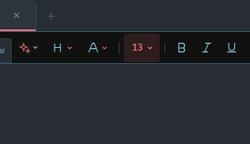
Visible, unobscured in 03-document. SVG is 13 by 13 px; contained in its owner control.
Replace the Aa mark and preserve the disclosure chevron.font-size
observedCaptured control: Editor display size (SVG fragment)
action-or-status-icon → action-or-status-icon
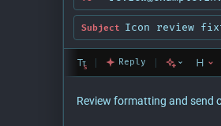
Visible, unobscured in document-send-options. SVG is 12 by 12 px; contained in its owner control.
Scoped to the selected source control; existing labels, state hooks and unrelated glyphs remain.text-color
observedCaptured control: Text color (SVG fragment)
disclosure-arrow → semantic-icon-plus-disclosure

Visible, unobscured in 03-document. SVG is 13 by 13 px; contained in its owner control.
Scoped to the selected source control; existing labels, state hooks and unrelated glyphs remain.highlight
observedCaptured control: Highlight color (SVG fragment)
action-or-status-icon → action-or-status-icon
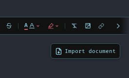
Visible, unobscured in 03-document. SVG is 13 by 13 px; contained in its owner control.
Scoped to the selected source control; existing labels, state hooks and unrelated glyphs remain.indent
observedCaptured control: Decrease indent (Ctrl+[) (SVG fragment)
action-or-status-icon → action-icon
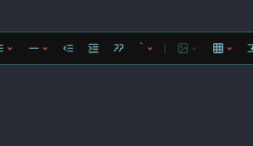
Visible, unobscured in 03-document-editing. SVG is 13 by 13 px; contained in its owner control.
Increase indent; the captured source decreases indent.line-spacing
observedCaptured control: Line spacing (SVG fragment)
action-or-status-icon → action-or-status-icon
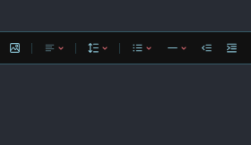
Visible, unobscured in 03-document-editing. SVG is 13 by 13 px; contained in its owner control.
Scoped to the selected source control; existing labels, state hooks and unrelated glyphs remain.blockquote
observedCaptured control: Block quote (SVG fragment)
action-or-status-icon → action-or-status-icon
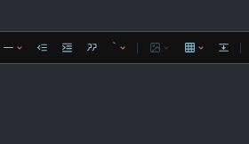
Visible, unobscured in 03-document-editing. SVG is 13 by 13 px; contained in its owner control.
Scoped to the selected source control; existing labels, state hooks and unrelated glyphs remain.text-box
observedCaptured control: Add text (literal text)
text-command → action-icon
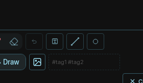
Visible, unobscured in notes-drawing. SVG is 13 by 13 px; contained in its owner control.
Scoped to the selected source control; existing labels, state hooks and unrelated glyphs remain.compose
observedCaptured control: Compose email (SVG fragment)
action-or-status-icon → action-or-status-icon
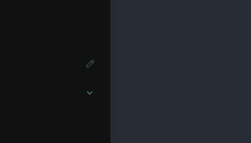
Visible, unobscured in 01-shell. SVG is 11 by 11 px; contained in its owner control.
Scoped to the selected source control; existing labels, state hooks and unrelated glyphs remain.send-later
observedCaptured control: More send options (SVG fragment)
disclosure-arrow → semantic-icon-plus-disclosure
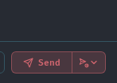
Visible, unobscured in document-email. SVG is 13 by 13 px; contained in its owner control.
Scoped to the selected source control; existing labels, state hooks and unrelated glyphs remain.spam
not-observedCaptured control: _spamIcon (SVG fragment)
action-or-status-icon → action-or-status-icon
Context onlySpam action requires a selected mailbox message. No email account or external mailbox was used. Screenshot shows the fixture model-picker context, not this unobserved glyph.
Scoped to the selected source control; existing labels, state hooks and unrelated glyphs remain.play
not-observedCaptured control: ICON_PLAY_TTS (SVG fragment)
action-or-status-icon → action-or-status-icon
Context onlyThe chosen Play glyph is a paused/completed TTS state. No speech service or audio playback was exercised.
Scoped to the selected source control; existing labels, state hooks and unrelated glyphs remain.pause
observedCaptured control: Active - click to pause (SVG fragment)
action-or-status-icon → action-or-status-icon
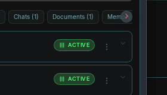
Visible, unobscured in feature-gallery. SVG is 10 by 10 px; contained in its owner control.
Scoped to the selected source control; existing labels, state hooks and unrelated glyphs remain.image
observedCaptured control: Insert image (SVG fragment)
action-or-status-icon → action-or-status-icon
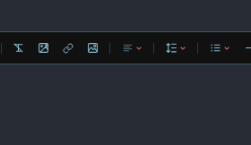
Visible, unobscured in 03-document-editing. SVG is 13 by 13 px; contained in its owner control.
Scoped to the selected source control; existing labels, state hooks and unrelated glyphs remain.image-export
observedCaptured control: Export an image to your computer (SVG fragment)
action-or-status-icon → labeled-command
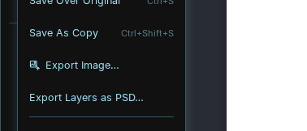
Visible, unobscured in editor-menu-file. SVG is 14 by 14 px; contained in its owner control.
Visible File menu Export Image command; the captured secondary export dropdown is hidden.rotate-right
observedCaptured control: Rotate 90 degrees (SVG fragment)
action-or-status-icon → action-or-status-icon
Visible, unobscured in editor-tool-transform. SVG is 14 by 14 px; contained in its owner control.
Scoped to the selected source control; existing labels, state hooks and unrelated glyphs remain.zoom-in
not-observedCaptured control: Zoom in (literal text)
text-command → action-icon
Context onlyThe Week zoom controls were not observed after opening Calendar in the disposable account. The action is unchanged apart from its glyph. Screenshot shows the fixture model-picker context, not this unobserved glyph.
Scoped to the selected source control; existing labels, state hooks and unrelated glyphs remain.line
observedCaptured control: Line — click to cycle size (SVG fragment)
action-or-status-icon → action-or-status-icon
Visible, unobscured in notes-drawing. SVG is 20 by 20 px; contained in its owner control.
Scoped to the selected source control; existing labels, state hooks and unrelated glyphs remain.path
observedCaptured control: Cancel path (Escape) (SVG fragment)
action-or-status-icon → tool-icon

Visible, unobscured in editor-tool-path. SVG is 18 by 18 px; contained in its owner control.
Pen Path tool; the captured X cancels a path.polygon
observedCaptured control: Polygon (SVG fragment)
action-or-status-icon → action-or-status-icon
Visible, unobscured in editor-tool-shape. SVG is 14 by 14 px; contained in its owner control.
Scoped to the selected source control; existing labels, state hooks and unrelated glyphs remain.rectangle
observedCaptured control: Rectangle (SVG fragment)
action-or-status-icon → action-or-status-icon
Visible, unobscured in editor-tool-shape. SVG is 14 by 14 px; contained in its owner control.
Scoped to the selected source control; existing labels, state hooks and unrelated glyphs remain.ellipse
observedCaptured control: Ellipse (SVG fragment)
action-or-status-icon → action-or-status-icon
Visible, unobscured in editor-tool-shape. SVG is 14 by 14 px; contained in its owner control.
Scoped to the selected source control; existing labels, state hooks and unrelated glyphs remain.shape-union
observedCaptured control: Unite Shapes (literal text)
menu-command → labeled-command
Visible, unobscured in editor-menu-layer. SVG is 14 by 14 px; contained in its owner control.
Scoped to the selected source control; existing labels, state hooks and unrelated glyphs remain.shape-subtract
observedCaptured control: Subtract Shapes (literal text)
menu-command → labeled-command
Visible, unobscured in editor-menu-layer. SVG is 14 by 14 px; contained in its owner control.
Scoped to the selected source control; existing labels, state hooks and unrelated glyphs remain.shape-intersect
observedCaptured control: Intersect selection (SVG fragment)
action-or-status-icon → action-or-status-icon
Visible, unobscured in editor-tool-marquee. SVG is 13 by 13 px; contained in its owner control.
Scoped to the selected source control; existing labels, state hooks and unrelated glyphs remain.shape-exclude
observedCaptured control: Exclude Shapes (literal text)
menu-command → labeled-command
Visible, unobscured in editor-menu-layer. SVG is 14 by 14 px; contained in its owner control.
Scoped to the selected source control; existing labels, state hooks and unrelated glyphs remain.eyedropper
not-observedCaptured control: Eyedropper (SVG fragment)
action-or-status-icon → action-or-status-icon
Context onlyThe custom color-picker popover did not expose its Eyedropper glyph in this run. The active inline swatches are a different owner. This remains unverified.
Scoped to the selected source control; existing labels, state hooks and unrelated glyphs remain.gradient
observedCaptured control: Add stop (literal text)
text-command → tool-icon
Visible, unobscured in 06-editor. SVG is 15 by 15 px; contained in its owner control.
Gradient tool; the captured plus adds a gradient stop.color-swap
observedCaptured control: Swap colors (SVG fragment)
action-or-status-icon → action-or-status-icon
Visible, unobscured in 06-editor. SVG is 11 by 11 px; contained in its owner control.
Scoped to the selected source control; existing labels, state hooks and unrelated glyphs remain.merge-down
observedCaptured control: Merge down (SVG fragment)
action-or-status-icon → action-or-status-icon
Visible, unobscured in 06-editor. SVG is 14 by 14 px; contained in its owner control.
Scoped to the selected source control; existing labels, state hooks and unrelated glyphs remain.merge-visible
observedCaptured control: Merge all (SVG fragment)
action-or-status-icon → action-or-status-icon
Visible, unobscured in 06-editor. SVG is 14 by 14 px; contained in its owner control.
Scoped to the selected source control; existing labels, state hooks and unrelated glyphs remain.flatten
observedCaptured control: Flatten copy (SVG fragment)
action-or-status-icon → action-or-status-icon
Visible, unobscured in 06-editor. SVG is 14 by 14 px; contained in its owner control.
Scoped to the selected source control; existing labels, state hooks and unrelated glyphs remain.rasterize
observedCaptured control: Rasterize (literal text)
text-command → labeled-command
Visible, unobscured in editor-tool-text. SVG is 14 by 14 px; contained in its owner control.
Scoped to the selected source control; existing labels, state hooks and unrelated glyphs remain.lock
not-observedCaptured control: Toggle selected lock (SVG fragment)
action-or-status-icon → action-or-status-icon
Context onlyToggle selected lock is a multi-selected-layer action. The fixture added layers but did not establish a multi-selection; this glyph remains unverified.
Scoped to the selected source control; existing labels, state hooks and unrelated glyphs remain.unlock
not-observedCaptured control: Unlock (literal text)
text-command → labeled-command
Context onlyUnlock belongs to the Vaultwarden integration form. No vault authentication or unlock operation was performed. Screenshot shows the fixture model-picker context, not this unobserved glyph.
Scoped to the selected source control; existing labels, state hooks and unrelated glyphs remain.mask
observedCaptured control: Hide mask (SVG fragment)
action-or-status-icon → action-icon
Visible, unobscured in editor-tool-marquee. SVG is 14 by 14 px; contained in its owner control.
Quick Mask mode icon; preserve the eye used to show/hide the mask.mask-add
observedCaptured control: Add a mask that reveals the whole layer (literal text)
menu-command → labeled-command
Visible, unobscured in editor-menu-layer. SVG is 14 by 14 px; contained in its owner control.
Scoped to the selected source control; existing labels, state hooks and unrelated glyphs remain.mask-invert
observedCaptured control: Invert mask (SVG fragment)
action-or-status-icon → action-or-status-icon
Visible, unobscured in editor-tool-inpaint. SVG is 12 by 12 px; contained in its owner control.
Scoped to the selected source control; existing labels, state hooks and unrelated glyphs remain.mask-clear
observedCaptured control: Clear mask (SVG fragment)
action-or-status-icon → action-or-status-icon
Visible, unobscured in editor-tool-inpaint. SVG is 12 by 12 px; contained in its owner control.
Scoped to the selected source control; existing labels, state hooks and unrelated glyphs remain.selection
observedCaptured control: Close path and make selection (Enter) (SVG fragment)
action-or-status-icon → action-or-status-icon
Visible, unobscured in editor-tool-pen. SVG is 12 by 12 px; contained in its owner control.
Scoped to the selected source control; existing labels, state hooks and unrelated glyphs remain.magnetic-lasso
observedCaptured control: More lasso options (feather, edge stroke, magnetic) (SVG fragment)
disclosure-arrow → labeled-command
Visible, unobscured in editor-magnetic-options. SVG is 14 by 14 px; contained in its owner control.
Magnetic mode button; keep the Lasso options chevron.quick-select
observedCaptured control: More Quick Select options (help) (SVG fragment)
disclosure-arrow → tool-icon
Visible, unobscured in editor-tool-quickselect. SVG is 18 by 18 px; contained in its owner control.
Quick Select tool; keep the separate More options chevron.subject-select
observedCaptured control: Subject (literal text)
menu-command → labeled-command
Visible, unobscured in editor-menu-selection. SVG is 14 by 14 px; contained in its owner control.
Scoped to the selected source control; existing labels, state hooks and unrelated glyphs remain.harmonize
not-observedCaptured control: Harmonize (literal text)
text-command → labeled-command
Context onlyHarmonize appears for a supported compositing workflow. Its label is retained. No ML harmonization service was invoked.
Scoped to the selected source control; existing labels, state hooks and unrelated glyphs remain.skew
observedCaptured control: Skew X +1° (literal text)
numeric-stepper → field-label
Visible, unobscured in editor-tool-transform. SVG is 12 by 12 px; contained in its owner control.
Horizontal skew field; keep the numeric stepper signs.perspective
observedCaptured control: Perspective X +1 (literal text)
numeric-stepper → field-label
Visible, unobscured in editor-tool-transform. SVG is 12 by 12 px; contained in its owner control.
Horizontal perspective field; keep the numeric stepper signs.snapshot
observedCaptured control: SNAPSHOT_ICON (SVG fragment)
action-or-status-icon → action-or-status-icon
Visible, unobscured in editor-history. SVG is 14 by 14 px; contained in its owner control.
Scoped to the selected source control; existing labels, state hooks and unrelated glyphs remain.history
observedCaptured control: Enable Nobody mode — no memory or skill injection, no history saved (SVG fragment)
action-or-status-icon → action-icon
Visible, unobscured in 06-editor. SVG is 14 by 14 px; contained in its owner control.
Editor history; the captured Nobody-mode action is unrelated.histogram
observedCaptured control: Equalize the histogram of the active layer (literal text)
menu-command → labeled-command
Visible, unobscured in editor-image-adjustments. SVG is 14 by 14 px; contained in its owner control.
Scoped to the selected source control; existing labels, state hooks and unrelated glyphs remain.hue-saturation
observedCaptured control: RGB Color (literal text)
format-or-mode-label → labeled-command
Visible, unobscured in editor-image-adjustments. SVG is 14 by 14 px; contained in its owner control.
Hue/Saturation adjustment; RGB Color selects a color mode.black-white
observedCaptured control: Grayscale (literal text)
format-or-mode-label → labeled-command
Visible, unobscured in editor-menu-image. SVG is 14 by 14 px; contained in its owner control.
Scoped to the selected source control; existing labels, state hooks and unrelated glyphs remain.invert
observedCaptured control: Invert (literal text)
menu-command → labeled-command
Visible, unobscured in editor-image-adjustments. SVG is 14 by 14 px; contained in its owner control.
Scoped to the selected source control; existing labels, state hooks and unrelated glyphs remain.desaturate
observedCaptured control: Desaturate (literal text)
menu-command → labeled-command
Visible, unobscured in editor-image-adjustments. SVG is 14 by 14 px; contained in its owner control.
Scoped to the selected source control; existing labels, state hooks and unrelated glyphs remain.auto-tone
observedCaptured control: Auto Tone (literal text)
menu-command → labeled-command
Visible, unobscured in editor-image-adjustments. SVG is 14 by 14 px; contained in its owner control.
Scoped to the selected source control; existing labels, state hooks and unrelated glyphs remain.auto-contrast
observedCaptured control: Auto Contrast (literal text)
menu-command → labeled-command
Visible, unobscured in editor-image-adjustments. SVG is 14 by 14 px; contained in its owner control.
Scoped to the selected source control; existing labels, state hooks and unrelated glyphs remain.auto-color
observedCaptured control: Auto Color (literal text)
menu-command → labeled-command
Visible, unobscured in editor-image-adjustments. SVG is 14 by 14 px; contained in its owner control.
Scoped to the selected source control; existing labels, state hooks and unrelated glyphs remain.blur
observedCaptured control: Soft Blur (literal text)
menu-command → labeled-command
Visible, unobscured in editor-submenu-filter-presets. SVG is 14 by 14 px; contained in its owner control.
Scoped to the selected source control; existing labels, state hooks and unrelated glyphs remain.sharpen
observedCaptured control: Sharpen (literal text)
text-command → labeled-command
Visible, unobscured in editor-tool-sharpen. SVG is 14 by 14 px; contained in its owner control.
Scoped to the selected source control; existing labels, state hooks and unrelated glyphs remain.drop-shadow
observedCaptured control: Soft Shadow (literal text)
menu-command → labeled-command
Visible, unobscured in editor-submenu-filter-presets. SVG is 14 by 14 px; contained in its owner control.
Scoped to the selected source control; existing labels, state hooks and unrelated glyphs remain.research-parallel
not-observedCaptured control: ICON_PARALLEL (SVG fragment)
action-or-status-icon → action-or-status-icon
Context onlyThis is a comparison execution-mode icon, not the Deep Research navigation icon. No configured comparison models were available.
Scoped to the selected source control; existing labels, state hooks and unrelated glyphs remain.research-sequential
not-observedCaptured control: ICON_SEQUENTIAL (SVG fragment)
action-or-status-icon → action-or-status-icon
Context onlyThis is a comparison execution-mode icon. No configured comparison models were available.
Scoped to the selected source control; existing labels, state hooks and unrelated glyphs remain.memory-search
observedCaptured control: search_memory (SVG fragment)
action-or-status-icon → action-or-status-icon
Visible, unobscured in chat-tool-fixture. SVG is 12 by 12 px; contained in its owner control.
Scoped to the selected source control; existing labels, state hooks and unrelated glyphs remain.skill-add
observedCaptured control: Add Skill (literal text)
text-command → labeled-command
Visible, unobscured in skills-add. SVG is 14 by 14 px; contained in its owner control.
Scoped to the selected source control; existing labels, state hooks and unrelated glyphs remain.skill-test
not-observedCaptured control: Test (literal text)
text-command → labeled-command
Context onlyThe captured Test label is actually a webhook Test command in Admin, not skill testing. Its label remains, but the catalog alias needs renaming to webhook-test or a separate skill-test mapping before broader reuse. No webhook was created or sent.
Scoped to the selected source control; existing labels, state hooks and unrelated glyphs remain.sliders
observedCaptured control: Set hardware manually (SVG fragment)
action-or-status-icon → action-or-status-icon
Visible, unobscured in feature-cookbook. SVG is 14 by 14 px; contained in its owner control.
Scoped to the selected source control; existing labels, state hooks and unrelated glyphs remain.keyboard
observedCaptured control: Keyboard shortcuts (?) (SVG fragment)
action-or-status-icon → labeled-command
Visible, unobscured in editor-menu-help. SVG is 14 by 14 px; contained in its owner control.
Visible Help menu command; the captured header shortcut icon is hidden in the current menubar layout.logout
not-observedCaptured control: Logout (literal text)
text-command → labeled-command
Context onlyThis Logout action belongs to Vaultwarden, not Odysseus account logout. No vault logout request was sent. Screenshot shows the fixture model-picker context, not this unobserved glyph.
Scoped to the selected source control; existing labels, state hooks and unrelated glyphs remain.user-add
observedCaptured control: Add User (literal text)
text-command → labeled-command
Visible, unobscured in settings-users. SVG is 14 by 14 px; contained in its owner control.
Scoped to the selected source control; existing labels, state hooks and unrelated glyphs remain.password-show
observedCaptured control: Show password (SVG fragment)
action-or-status-icon → action-or-status-icon
Visible, unobscured in 00-login. SVG is 18 by 18 px; contained in its owner control.
Scoped to the selected source control; existing labels, state hooks and unrelated glyphs remain.ai-writing
observedCaptured control: Writing tools (SVG fragment)
action-or-status-icon → action-or-status-icon
Visible, unobscured in 03-document. SVG is 13 by 13 px; contained in its owner control.
Scoped to the selected source control; existing labels, state hooks and unrelated glyphs remain.aspect-ratio
observedCaptured control: Swap width and height (SVG fragment)
action-or-status-icon → labeled-command
Visible, unobscured in editor-tool-crop. SVG is 14 by 14 px; contained in its owner control.
Original-aspect crop preset; retain the directional Swap width and height action.crop-landscape
observedCaptured control: landscape (SVG fragment)
action-or-status-icon → labeled-command
Visible, unobscured in editor-tool-crop. SVG is 14 by 14 px; contained in its owner control.
Widescreen crop preset; Research landscape is an overview strategy.selection-add
observedCaptured control: Add selection to mask (SVG fragment)
action-or-status-icon → action-icon
Visible, unobscured in editor-tool-marquee. SVG is 13 by 13 px; contained in its owner control.
Add to selection mode; To Mask creates a layer mask.selection-invert
observedCaptured control: Invert selection (SVG fragment)
action-or-status-icon → action-or-status-icon
Visible, unobscured in editor-tool-marquee. SVG is 14 by 14 px; contained in its owner control.
Scoped to the selected source control; existing labels, state hooks and unrelated glyphs remain.selection-reselect
observedCaptured control: Reselect (literal text)
menu-command → labeled-command
Visible, unobscured in editor-menu-selection. SVG is 14 by 14 px; contained in its owner control.
Scoped to the selected source control; existing labels, state hooks and unrelated glyphs remain.selection-grow
observedCaptured control: Grow (literal text)
menu-command → labeled-command
Visible, unobscured in editor-menu-selection. SVG is 14 by 14 px; contained in its owner control.
Scoped to the selected source control; existing labels, state hooks and unrelated glyphs remain.selection-similar
observedCaptured control: Similar (literal text)
menu-command → labeled-command
Visible, unobscured in editor-menu-selection. SVG is 14 by 14 px; contained in its owner control.
Scoped to the selected source control; existing labels, state hooks and unrelated glyphs remain.align-distribute
not-observedCaptured control: Align or distribute selected layers (SVG fragment)
action-or-status-icon → action-or-status-icon
Context onlyAlign/distribute selected layers requires a multi-selection. It is distinct from ordinary text alignment. The multi-selected state was not established.
Scoped to the selected source control; existing labels, state hooks and unrelated glyphs remain.transform-width
observedCaptured control: Increase width (literal text)
numeric-stepper → field-label
Visible, unobscured in editor-tool-transform. SVG is 12 by 12 px; contained in its owner control.
Width field; keep the increment/decrement buttons as + and minus.transform-height
observedCaptured control: Increase height (literal text)
numeric-stepper → field-label
Visible, unobscured in editor-tool-transform. SVG is 12 by 12 px; contained in its owner control.
Height field; keep the increment/decrement buttons as + and minus.image-generate
observedCaptured control: generate_image (SVG fragment)
action-or-status-icon → action-or-status-icon
Visible, unobscured in chat-tool-fixture. SVG is 12 by 12 px; contained in its owner control.
Scoped to the selected source control; existing labels, state hooks and unrelated glyphs remain.file-png
observedCaptured control: PNG (literal text)
format-or-mode-label → labeled-command
Visible, unobscured in editor-export. SVG is 14 by 14 px; contained in its owner control.
Scoped to the selected source control; existing labels, state hooks and unrelated glyphs remain.file-jpeg
observedCaptured control: JPEG (literal text)
format-or-mode-label → labeled-command
Visible, unobscured in editor-export. SVG is 14 by 14 px; contained in its owner control.
Scoped to the selected source control; existing labels, state hooks and unrelated glyphs remain.